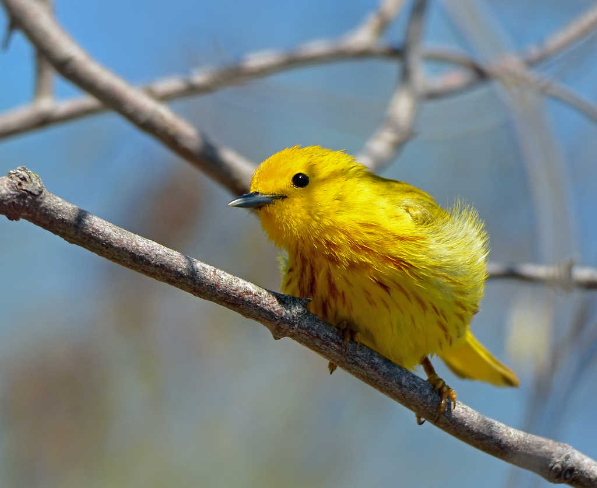
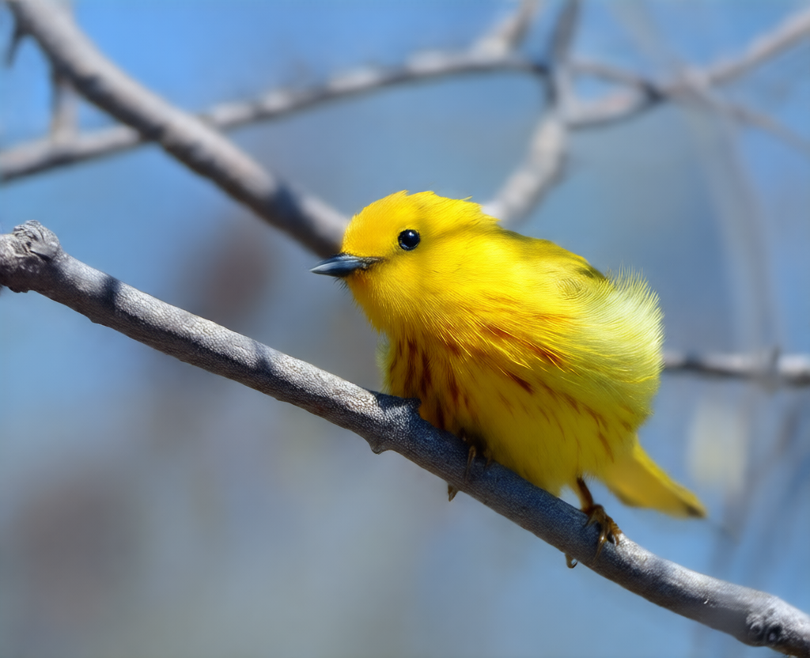
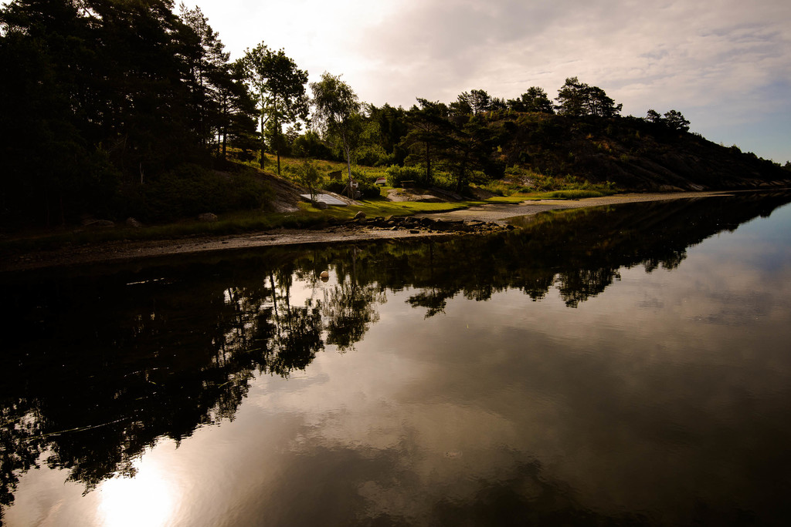
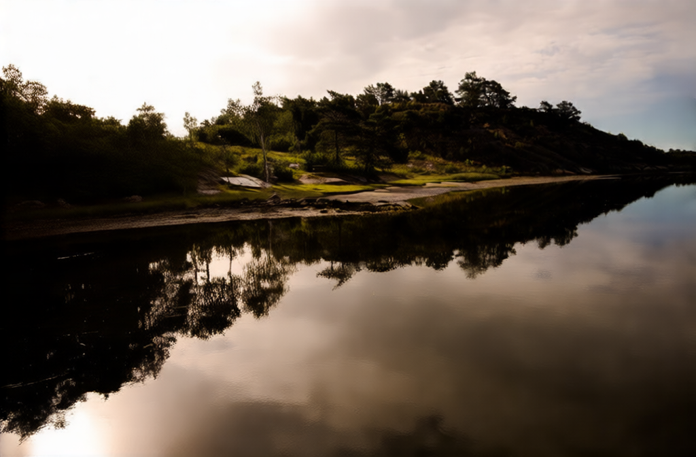
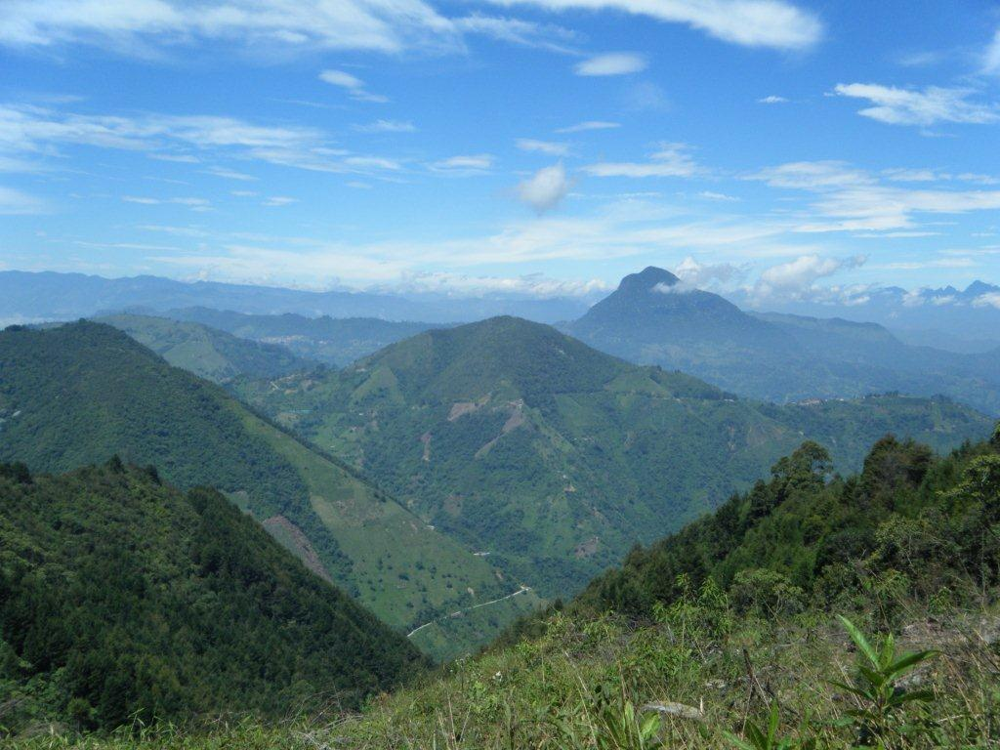
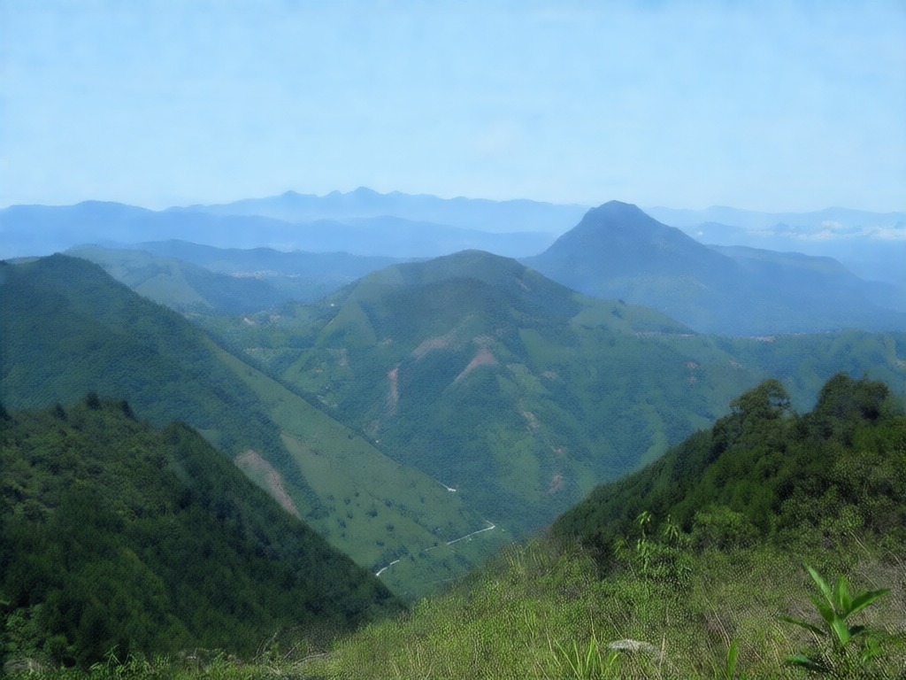
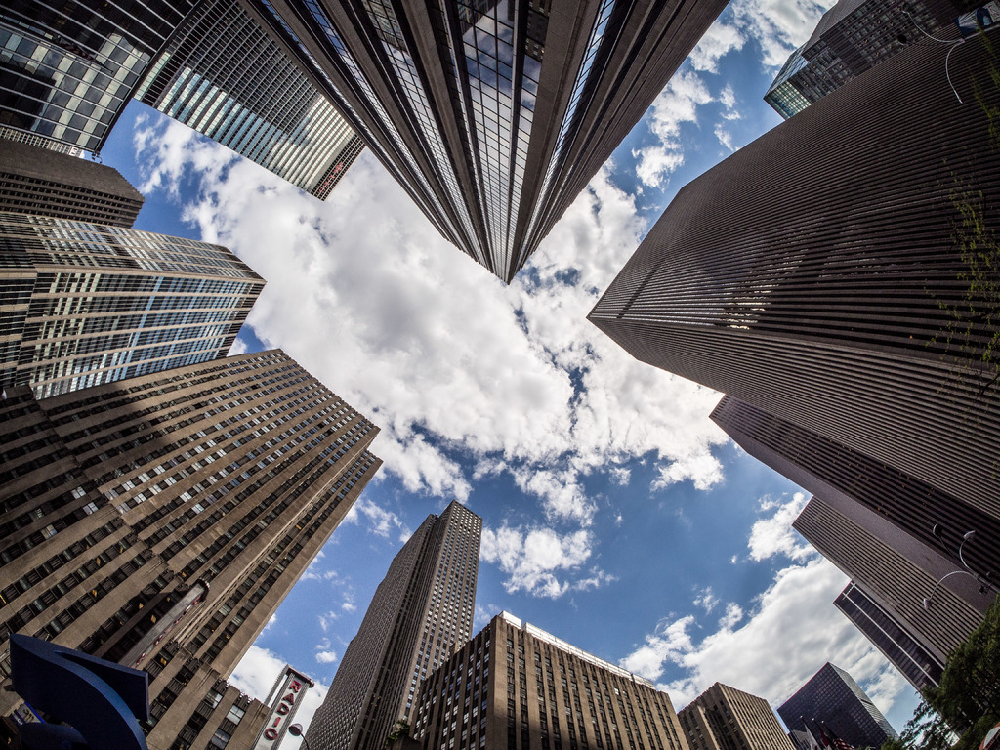
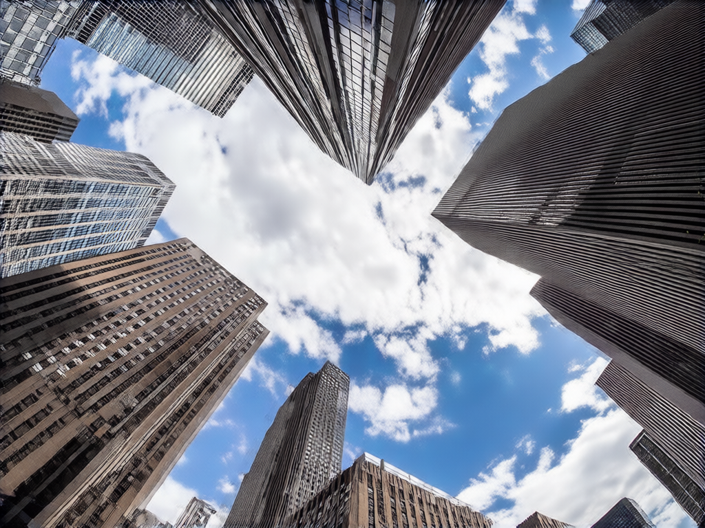
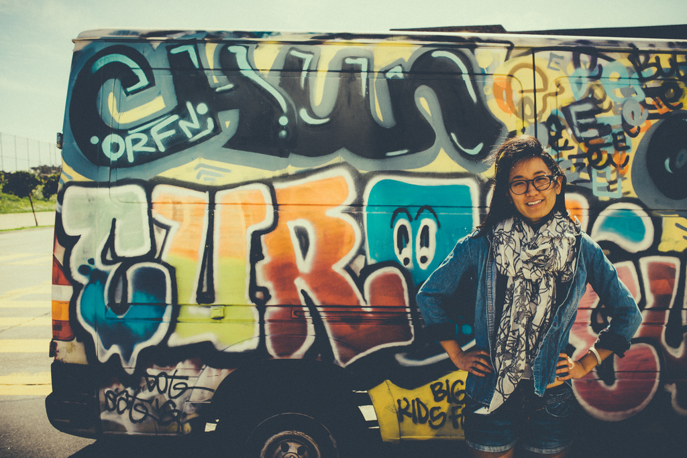
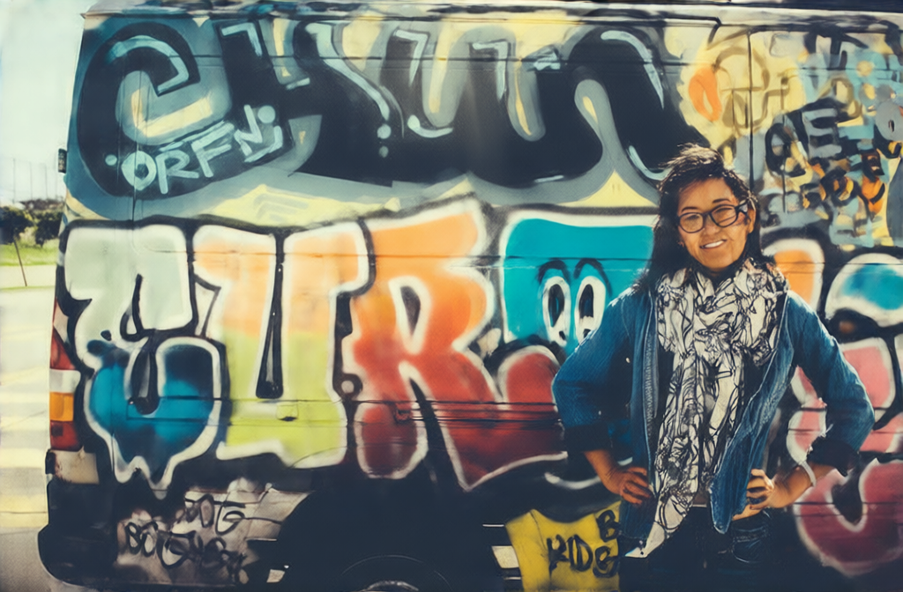

| STT | Critique | Input Image | Instruction VLM | Edited Image |
|---|---|---|---|---|
| 1 | I like the positioning of the bird in the middle of the image, and just slightly to the right. The focus is sharp on the bird and the branch it's standing on. Overall, the photo is very good, but if I had to try changing something, I would fiddle around with the color grading. The colors of the background could be tweaked a bit more to make the bird stand out. I would suggest muting the colors of the background and increasing the blues a bit more. |
 image/infer_1.jpg
|
In this edited version, I've adjusted the color grading to mute the background colors and increase the blue tones slightly. This should help the bird stand out more effectively against the background. |
 image/edited_1.png
|
| 2 | The first glaring issue with this photo is that the tops of the trees on the left are cut off. This detracts from the photo and undermines the reflection we see in the water. I would zoom out or step back to capture the entire hill. Also, I suggest centering the reflection in the middle of the photo, as this would be more visually appealing. Another thing is that the color grading choice isn't suitable. The muted colors don't suit the photo and setting. I would suggest increasing the saturation or, if the muted colors are intentional, converting it to a completely black and white version. |
 image/infer_2.jpg
|
Here are the suggested adjustments for the image: 1. Crop the image to remove the top portion of the trees on the left side.2 |
 image/edited_2.png
|
| 3 | The photo is a solid attempt at landscape photography. I like the balance between the mountains and sky. I also like that everything is in focus and that the angle shows all the mountains behind each other. The color grading is suitable and well done. I like the balance between the mountains and sky. However, if I had to adjust something, I would decrease the proportion of sky captured in the photo. I would try having the proportion be closer to 1:3, sky to mountain. It's currently 40:60. The aim of this is to bring more attention to the mountain layering. Currently, the eyes gravitate towards the horizon. With the suggested change, the eyes would be focused more on the transition between the layers of the mountains. |
 image/infer_3.jpg
|
The image has been edited to increase the proportion of the mountainous landscape, reducing the sky's presence. The composition now focuses more on the layered mountains, enhancing the visual depth and detail of the terrain. |
 image/edited_3.png
|
| 4 | It's a nice city shot. The angle is interesting. A glaring thing to change would be removing the blue structure from the bottom left of the image. This might not be possible in reality if you can't avoid it, so if not, I would suggest removing it with editing. Currently, it distracts the viewer. Same thing for the street lights showing up on the top and bottom right corners. I would also play around with the color grading to have a more appealing blue for the sky. There are also two options for the coloring of the buildings: either keep them in their own colors and maybe increase the saturation a bit to bring out the colors, such as the red RADIO sign in the back, or go with a black and white edit on the buildings while maintaining the blue sky reflections. |
 image/infer_4.jpg
|
Here are the edited images based on your instructions:1. **Blue Structure Removal**: The blue structure at the bottom left has been removed.2. **Street Light Removal**: The street lights in the top-right corners are no longer visible.3. **Color Grading**: The sky has been adjusted to a more appealing blue tone.4. **Building Colors**: The buildings have been edited to have a consistent color scheme with increased saturation.5. **Black & White Option**: An alternative black-and-white version of the image is provided.Please let me know if you have any further adjustments or if you would like to see additional edits. |
 image/edited_4.png
|
| 5 | The subjects are interesting. I would move the woman to exactly one-third of the way in from the right side. She is a bit too close to the edge of the photo. Otherwise, the framing is cool and shows off the woman's van well. The color grading is washed out, which gives it a certain look, but I feel like going for a shinier finish could make the image pop more. Besides that, the focus is good, and it's a good shot. |
 image/infer_5.jpg
|
The image has been adjusted as follows:1. The woman has been moved to approximately one-third of the way from the right side of the image.2. The overall exposure has been increased to enhance the brightness and contrast.3. The color saturation has been adjusted to make the colors more vibrant.4. The sharpness has been increased to bring out more detail in the subject and background.5. A slight vignette has been added to draw attention to the subject.These adjustments should improve the overall quality and appeal of the image. |
 image/edited_5.png
|